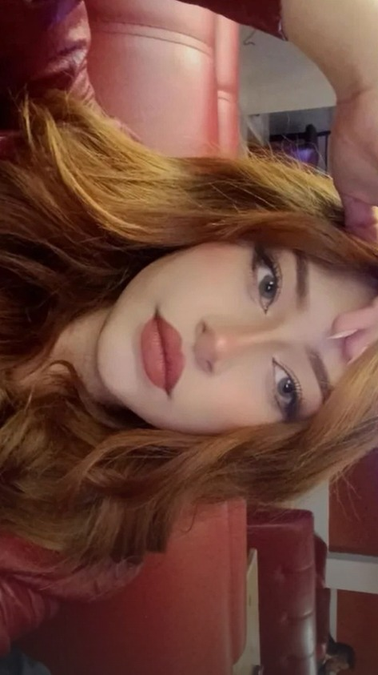
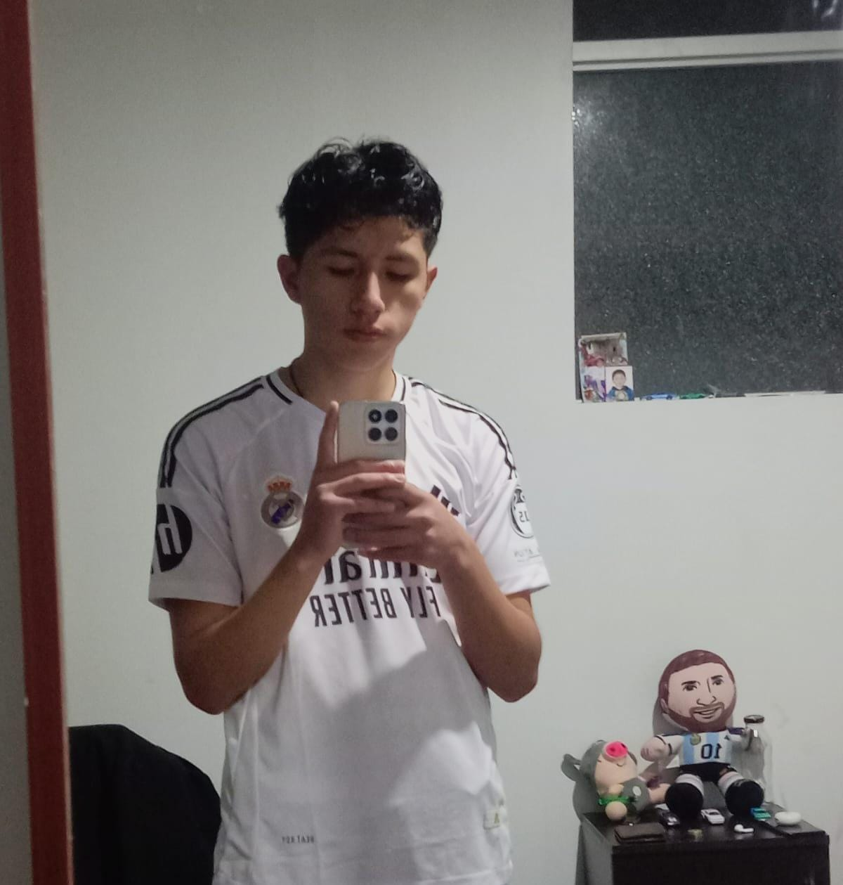

Nuestro Equipo
Mauricio Gonzalo Yepez Valverde
Especialista en argumentación jurídica. Información Personal y Académica: Nombre completo: Mauricio Gonzalo Yépez Valverde. Estudiante universitario del segundo semestre en la Universidad Andina del Cusco (UAC). Aspirante a abogado, comprometido con la excelencia académica y el desarrollo personal.
Filosofía de Vida: Motivado por el estoicismo, priorizando la justicia, la sabiduría, el coraje y la templanza. Con un enfoque en "Audentes Fortuna Iuvat" (la fortuna favorece a los valientes). Propuesta de Valor: Dedicado a ser un profesional ético, orientado al servicio público y la justicia. Objetivos Personales y Profesionales: - Corto Plazo: - Publicar un artículo académico. - Participar en debates sobre temas jurídicos. - Realizar prácticas en un estudio de abogados. - Unirse a una organización estudiantil. - Desarrollar habilidades en oratoria y liderazgo. - Defender derechos de estudiantes y comunidades vulnerables. - Largo Plazo: - Especializarse en derecho constitucional o administrativo.- Integrar la magistratura.
- Formar parte de organismos internacionales.
- Crear una fundación que brinde asesoría legal gratuita.
- Participar como expositor en eventos jurídicos globales. Experiencias y Logros:
- Experiencia como líder de equipos en actividades académicas.
- Participación en simulaciones de juicios y concursos de debate. Contacto:
Correo electrónico: 024101421e@uandina.edu.pe
Mi inspiracion
Mi video motivador
Steve Guillermo Villasante Quispe
Experto en derecho penal
Hola, soy Steve Guillermo Villasante Quispe Estudiante de Derecho en la Universidad Andina del Cusco (UAC) con enfoque en el crecimiento personal y la inspiración a otros. Me inspiro en el estoicismo, valorando la templanza, el coraje, la sabiduría y la justicia Frase de vida:"Mi propósito es ser una fuente de inspiración y apoyo para quienes buscan crecer y superar sus propios límites."
Objetivos:
1. Especializarme en derecho
2. Realizar prácticas profesionales en el campo del Derecho
3. Defender causas sociales y promover la justicia.
4. Obtener experiencia en la gestión pública o privada en el ámbito legal.
5. Unirse a una ONG para defender los derechos humanos.
6. Llegar a ser político y generar cambios significativos en la legislación.
Mi localidad
Mi video inspirador
Josue David Chavez Villalba
Analista en procedimientos judiciales. Estudiante universitario del segundo semestre en la Universidad Andina del Cusco (UAC). Aspirante a abogado, con pasión por el crecimiento personal y la inspiración de otros.
Filosofía de Vida: Inspirado en el estoicismo, valorando la templanza, el coraje, la sabiduría y la justicia. Enfoque en "Carpe Diem" (aprovechar el día).Propuesta de Valor: Enfocado en ser una fuente de inspiración y apoyo para los demás.
Valores:
Respeto
Confianza
Honestidad
Compromiso
- Fortalezas Ambiente de calidad Resiliencia Inteligente Superación
Mi pekita
Mi video good
Ezperanza Rayka Roca Quirquihuaña
Experta en estrategias de litigación oral. Información Personal y Académica: Nombre completo: Rayka Esperanza Roca Quirquihuaña. Estudiante universitaria del segundo semestre en la Universidad Andina del Cusco (UAC). Aspirante a abogada, con pasión por el crecimiento personal y la inspiración de otros.
- Filosofía de Vida: Inspirada en el estoicismo, valorando la templanza, el coraje, la sabiduría y la justicia. Enfoque en "Carpe Diem" (aprovechar el día). - Propuesta de Valor: Enfocada en ser una fuente de inspiración y apoyo para los demás. Objetivos Personales y Profesionales: - Corto Plazo: Tener su propio libro. Incursionar en el modelaje. Bailar marinera. Practicar el estoicismo. Unirse a una ONG. Empezar prácticas profesionales. Defender causas sociales.- Largo Plazo: Especializarse en derecho administrativo. Unirse a la marina. Llegar a ser política. Tener un albergue para perros y gatos. Participar en charlas TEDx.
Experiencias y Logros: Experiencia laboral como maquilladora (Make Up Artist).
- Contacto: Correo electrónico: 024101273f@uandina.edu.pe
Mi amochito
Mi video gozu